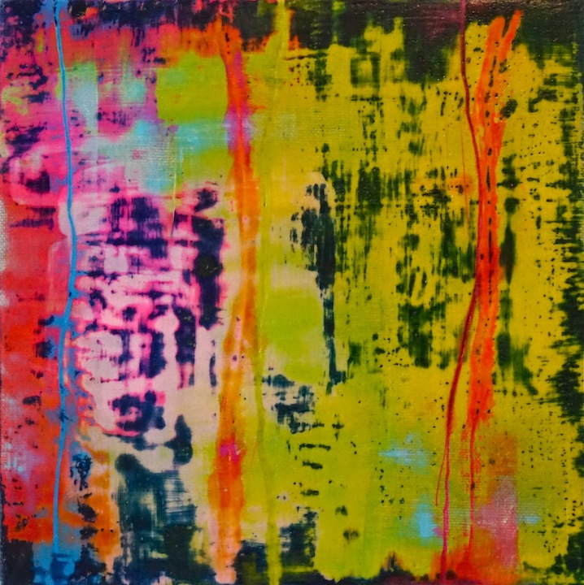
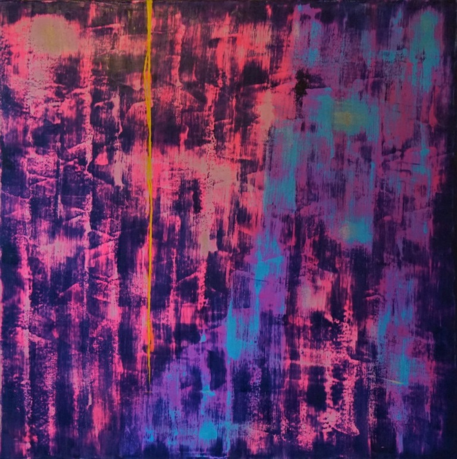

.
Blog
Contact
Vincent Delrue
Art abstrait contemporain
Nathan-encaustique sur toile-60x60 cm

Frère et soeur

le silence cire pigmentée 80x80 cm
 Nathan-encaustique sur toile-60x60 cm
Nathan-encaustique sur toile-60x60 cm
Nathan-encaustique sur toile-60x60 cm
Nathan-encaustique sur toile-60x60 cm